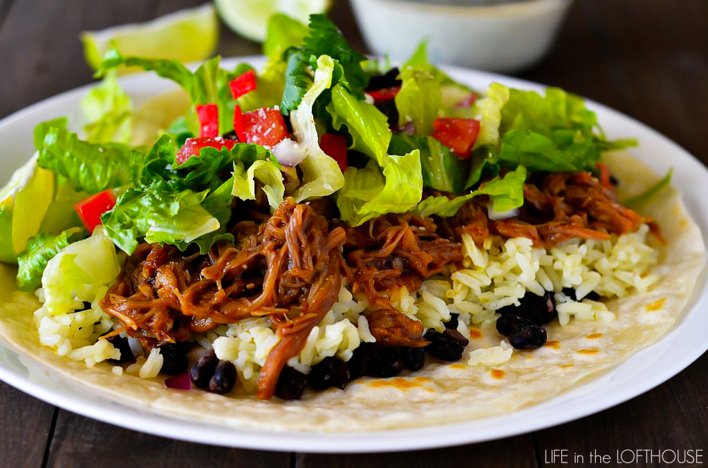

Home
Cafe Rio Copycat Sweet Pork

Description
I already know what you’re thinking. Does the food blog world really need another Café
Rio recipe? Well, my answer is YES. A big fat huge YES because this Cafe Rio Sweet Pork
recipe is phenomenal, and I don’t throw that word around too much.
About 2 years ago I started making the sweet pork at home, and it just never tasted right.
So I’ve been experimenting with different versions and this one is the one we feel tastes
closest to the real thing. It is so sweet, so delicious. It literally melts in your mouth.
There’s no need to marinate the pork, like other recipes. I skipped out on doing it this time,
and I could not tell a difference at all. This pork is SO flavorful! It’s perfect in burritos,
tacos and salads. We love to place a tortilla on a plate, then top it with black beans, rice
and the sweet pork, just like Café Rio does.
Read more here.
Ingredients
- 3 pound pork shoulder/butt roast
- 16 ounces Coca-Cola soda, divided ( do not use diet soda. You need the regular soda for the sugar in it)
- 1/4 cup water
- 1 teaspoon garlic salt
- 1/8 teaspoon salt
- 1/4 teaspoon pepper
- 1 can (4 ounces) diced green chilies
- 1 can (10 ounces) red enchilada sauce
- 3/4 cup packed brown sugar
Preparation Steps
- Spray inside of a large crock pot with cooking spray. Place pork roast inside. Pour 8 ounces of Coca-Cola
( I used a measuring cup) and water around pork. (It does not need to cover roast)
- Sprinkle evenly with garlic salt, salt and pepper. Cover with lid and cook on high heat for 6 hours OR
cook on low heat for 8 hours.
- Remove pork from crock pot and transfer to cutting board. Discard liquid from crock pot. Shred pork with
two forks, and remove any fat.
- In a blender or food processor, blend the remaining 8 ounces Coca-Cola, diced green chilies, enchilada
sauce and brown sugar. Blend until smooth.
- Place shredded pork back in crock pot. Pour enchilada sauce mixture over the shredded pork. Cover
crock pot with lid and cook another 1 to 2 hours on low heat.
- Serve pork in burritos, salads and tacos!